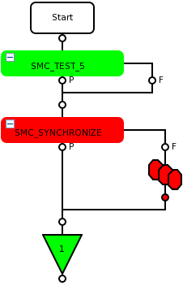
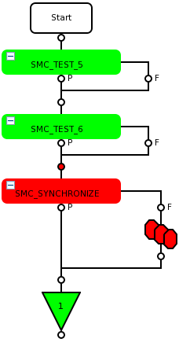

Use of SMC_TEST() with multibin
The topic describes the binning rule and the main use cases using SMC_TEST() and its influence on the multibin.
For using it together with TESTSET objects, see Use of TESTSET and SMC_TEST() test suites with multibin.
If you use TESTSET within the SMC framework instead of SMC_TEST, binning happens in SMC_SYCHRONIZE according to the binning rules as for SMC_TEST. For details, see the examples below.
If you use, within a testflow, the SMC framework and TESTSET test suites independent of each other, binning happens according to the binning rules explained in Use of TESTSET and SMC_TEST() test suites with multibin.
The first failing test defines the multibin, which will be logged in SMC_SYNCHRONIZE().
Examples
Example 1: Single SMC test
The first failing test of SMC_TEST_5 logs to the multibin.
|
 |
Code snippet from SMC_TEST_5: Virtual void run()
{
SMC_TEST("cx0","test",V93kLimits::tmLimits,0,true);
SMC_TEST("cx1","test",V93kLimits::tmLimits,0,true);
return;
}If both tests fail, the first one (failing cx0) will be logged into the multibin. |
Example 2: Multiple SMC tests
The first failing test of SMC_TEST_5 and SMC_TEST_6
logs to the multibin.
 |
If all tests fail, the first one of
If all tests of |
Functional changes
- Introduced in SmarTest 7.1.4